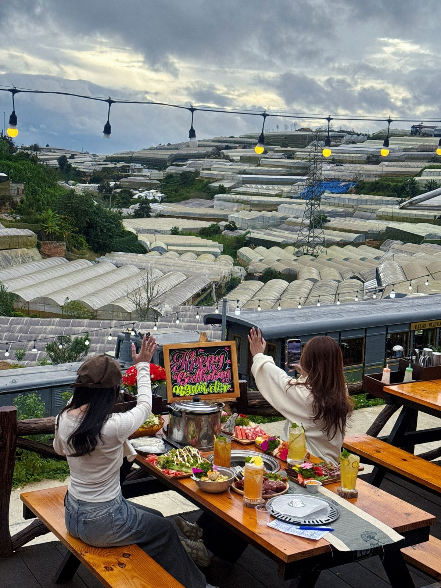

1. Nướng BBQ ngoài trời ngắm hoàng hôn
Trải nghiệm số 1 mà mọi du khách nên thử: ngồi ngoài trời se lạnh, tự tay nướng thịt bò, hải sản trên than hoa, vừa ăn vừa ngắm hoàng hôn buông xuống thung lũng. Đây là trải nghiệm "signature" của Đà Lạt mà không thành phố nào có được.
2. Lẩu gà lá é — Đặc sản chỉ Đà Lạt mới ngon
Gà ta thả vườn nấu cùng lá é (húng quế Đà Lạt), nước lẩu trong ngọt thanh, thơm mùi lá é đặc trưng. Ăn kèm bún, rau sống Đà Lạt giòn ngọt. Đây là món "phải ăn" khi đến phố núi — đặc biệt ngon trong tiết trời se lạnh.
3. Bánh tráng nướng chợ đêm — "Pizza Đà Lạt"
Bánh tráng nướng giòn rụm, phết trứng cút, pate, mỡ hành, phô mai — chỉ 15-20K/chiếc. Ăn nóng giữa đêm lạnh Đà Lạt, đi dạo chợ đêm — trải nghiệm ẩm thực đường phố không thể thiếu.
4. Nướng BBQ view xe lửa tại Trạm Dừng Chill
Nâng tầm trải nghiệm nướng BBQ: tại Trạm Dừng Chill (111 Huỳnh Tấn Phát, P11), bạn vừa nướng vừa ngắm xe lửa cổ kính chạy ngang. Thêm view biển đèn nhà lồng ban đêm — đây là trải nghiệm ẩm thực "triệu view" đúng nghĩa.

5. Cà phê sáng sớm trong sương mù
Thức dậy sớm, ra quán cà phê view đồi, ngồi giữa sương mù uống ly cà phê nóng — chậm rãi và bình yên. Đà Lạt có hàng trăm quán café view đẹp, nhưng trải nghiệm sương sớm mới là "chất" nhất.
Tất cả 5 trải nghiệm này đều nên có trong lịch trình Đà Lạt 2027 của bạn. Đặt bàn nướng BBQ ngay để bắt đầu!